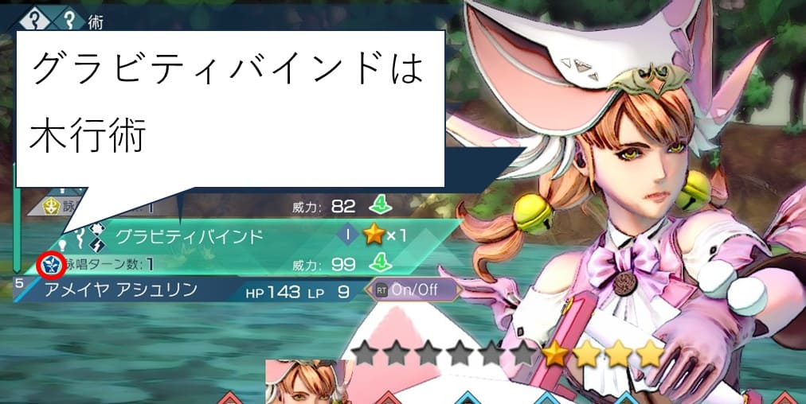
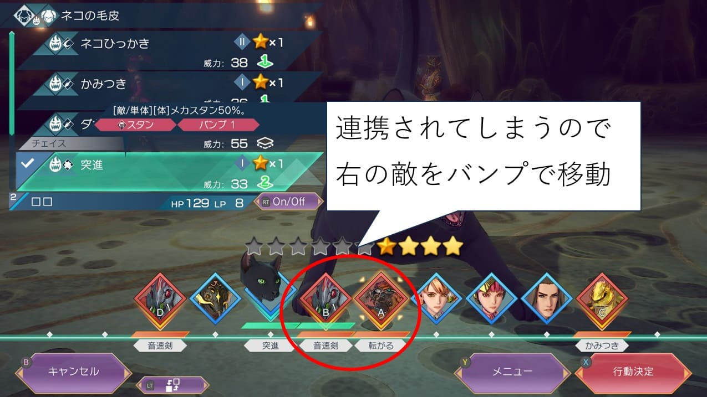

サガエメバトルの基本
はじめに
サガエメのバトルは面白いけど、慣れないと難しいところがあるのかなと思っています。
前作のサガスカに慣れている方は割とすんなり入れると思うのですが、そうでない方は慣れるまで多少時間がかかる気がしています。
管理人はそんなに上手ではないものの、一応サガスカプレイ済みで、サガエメは体験版と合わせて大体10時間程度プレイしました（2024年5月3日現在）。
やりこんでいるとはとても言い難い状態なのですが、少しでもサガエメのバトルの魅力に気付ける人が増えればいいなと思い、バトルの基本的な情報を独断と偏見で整理してみたのがこの記事です。
攻撃属性
攻撃の属性は「斬・打・突・熱・冷・雷・無」の7種類があります。
いずれかの属性が敵の弱点である場合がある（弱点が存在しない敵もいる）ため、使用する技の属性が何なのか、敵の弱点が何なのかを意識した方が戦闘を優位に進めることができます。
使用する技の属性は戦闘画面で確認することができます。
精密射撃は突
斬り払いは斬
強撃は斬と打の複属性
五行
サガエメの世界は、万物を五行（木・火・土・金・水の5種類）の観念で捉えることができるとされています。
ゲーム中で関係しているのは、術の体系と戦闘のフィールドです。
術とフィールドを5種類に分類できるというだけの話であり、攻撃属性とは別物です（火行に属する術は火属性攻撃のものが多いなどの関連性はあるが、基本的に別物なので分けて解釈する必要がある）。
木が青かったり水が黒かったりして直感に反する色をしていますが、これは元ネタとなった中国の五行思想がこの配色でそれに合わせた色をしているためです。
以下は元ネタの五行の図。

木に対応する四神は青龍なので青、水は玄武なので黒のように、対応する四神で判別するとイメージし易いかもしれません。
五行については以前サガシリーズと陰陽五行説という記事を書いているので、興味あれば是非見てみてください。
話しをサガエメに戻します。
フィールドの五行については、戦闘前に以下の画面で確認することができます。
下記の画面なら土行のマークがあるので、フィールドは土行です。
これまでのサガシリーズの傾向からしておそらく、バトルの場に合った術の威力が上がるなどの効果があると思われます。ただし情報として公開されているわけではなく（たぶん）、解析も進んでいないのが現状なので『おそらくそうだろう』というのが今の位置づけです。
一方、使用する術が何行かはメニューか戦闘画面で確認することができます。
ブラッドフリーズは金行術で、攻撃属性は冷
呪縛は五行では土行術で、攻撃属性は無
グラビティバインドは木行術で、攻撃属性は打と雷

太陽光線は火行術で、攻撃属性は火
対空
『飛んでる敵は当たりにくい』という特性があります。
連係の所にも書きましたが、連係すると恐らく必中なので連係で対応できます。
また、河津さんがXでポストしていましたが、対空攻撃や対空の陣形を使うという方法でも対応できます。
飛んでる敵はあたりにくい！
— 河津秋敏 (@SaGa30kawazu) April 29, 2024
「対空」という属性は飛んでる敵にもあたるという意味です。片手銃技には大概付いてます。対空の陣形もあります。ご活用下さい。 https://t.co/9V2767xzH8
対空攻撃についてはTIPSにも書いてあります。
対空技かどうかは戦闘画面で確認することができます。
対空効果のある陣形は『両翼陣』などがあります（両翼陣以外にもいろいろあると思います）。
飛んでいる敵にはこれらを活用して対応しましょう。
プロテクト
プロテクトは味方を守る技です。倒れてほしくない味方をガードし、さらに受けるダメージを軽減します。
以下の画像は大剣のディフレクトというプロテクト技でロロをガードしようとしています。
連携
タイムラインの緑のマスが繋がっていると連携になる。敵も連携してくる（敵の場合は赤いマス）。
連係した場合は恐らく必中。TIPSなどには明記されていないが、連係すれば暗闇状態でも飛んでいる敵にも攻撃は当たるので恐らく必中。
リザーブ技の『フォロー』を上手く使うと連携を繋げることができるので活用しましょう。
連携が繋がると連携率が上昇。連携率が150%以上なら40%の確率（※）でオーバードライブ発動。連携率が200%以上なら必ずオーバードライブが発動する。
※40%という数字は以下の公式放送で明かされた数字。以下動画の1時間6分50秒辺り
独壇場
タイムライン上で前後2マスに誰もいない場合に発動。敵も使って来る。
1ターンに1回しか発生しないため、先に敵に使われないように注意が必要。
#サガエメ 【体験版Tips：独壇場】
— サガ 公式 (@Romasaga2_PR) April 5, 2024
タイムライン上で前後２マス以内に誰もいない場合「独壇場」が発生。
バトル後半で発生しやすく、一手で戦況が逆転することもあるので、多くの味方が倒されてもまだ望みはある……だがそれは敵側も同じであることに注意。… pic.twitter.com/2NW6RYYLFJ
#サガエメ 【独壇場】
— サガ 公式 (@Romasaga2_PR) May 1, 2024
独壇場は１ターンに一度しか発動しない。タイムラインの条件を満たしていても、同じターンで敵が先に独壇場をした場合は、独壇場が発動しないので注意が必要。 https://t.co/5JXrnfvLZG pic.twitter.com/GKfkBc0C5l
バトル画面の見方
サガエメのバトル画面は情報量が多ので、自分が見ているところを整理してみました。ザックリ以下のようなことを考えながらプレイしています。
- 相手が連携・独壇場してきそうならそれを阻害するように技を選択。
- 瀕死かつ倒れてほしくない味方キャラがいる場合はプロテクト。
- 自分が連携できるように技を選択。その時に弱点を突ければなお良い。
- 場合によっては独壇場を狙えないか考えてみる。
- バンプでうっかり敵が連携してしまったり、敵が独壇場してしまうようなことが無いように注意。
こんな感じでやっています。この辺のバランスは人によるだろうし、自分よりうまい人は違うことを考えているかもしれません。参考程度に。
使用する技を選択する画面。見る場所は大体この辺。
ターゲットを選択する画面。弱点を突いているかがわかる。
複属性の攻撃で敵の弱点を突いた場合、どちらの属性が弱点を突いているかは画面左を見ると、対象の属性は水色に明滅しているのでそれで判断できる。
下の画像は強撃（斬＋打）で攻撃した場合。斬が水色に明滅しているのでスケルトンは斬弱点だということがわかる。
行動前防御（回避）、行動後防御（回避）についても戦闘画面で確認できる。
行動前防御（回避）
行動後防御（回避）
敵の連携に割り込む
連携は戦闘を有利に進める上で重要です。敵も連携してくるので、連携されそうな場合は割り込んで連携させないことも重要。
連携に割り込む手段としては、以下のようなものが考えられる（他にもあるかもしれないけどご参考までに）。
- 選択する技によってTLの位置が変わるのでそれで敵の連携が繋がらないようにする
- バンプで無理矢理タイムラインを移動させて連携が繋がらないようにする
- インタラプトやチェイスなどで敵の連携に割り込む
せんせいの試練ではカウンターもその手段の一つとして挙げられている。
しかしカウンターは、技を使用しているキャラが狙われる保証がなく（怒り状態は除く）、運良く狙われたとしても100%発動するわけでもないので、確実性に欠けます。
なので連携に割り込む目的では個人的にはあんまり使いません。
技の選択で割り込む
以下の画像は、選択する技で敵の連携に割り込む例です。
かみつきを選択した場合は敵に連携されてしまうが、ネコひっかきを選択すると敵の間に入り込めるため、敵の連携を阻害することができる。
バンプで移動させる
以下の画像は、バンプで移動させることで敵を移動させて連携を阻害する例です。
真ん中の敵2体が連携してしまうのを、バンプ技（突進）で移動させることで連携を阻害しています。

インタラプトで割り込む
インタラプトは、特定の属性（斬・打・突のいずれか）に反応して敵が行動する直前に割り込むことができる技です。
インタラプトで割り込む例。
インタラプトは特定の属性に反応して先に行動する技なので、これを利用することで敵の連携に割り込むことができる。
以下の画像のような状態の場合、インタラプトで敵の連携に割り込むことができます。
実際に技が発動している様子がこちら。アルラウネの小突くの前に早打ちで敵の連携に割り込んでいることがわかります。
チェイスで割り込む
チェイスは指定した敵の行動の直後に行動する技で、敵の連携を阻止するのに便利な技です。
チェイスで割り込む例。
チェイスは狙った敵が行動した直後に発動する技なので、これを利用することで敵の連携に割り込むことができる。
実際に技が発動している様子がこちら。ヴァイパーDの毒牙の後にダガージョウが発動することで連携に割り込んでいることがわかります。
リザーブ解除
リザーブ技（インタラプト、カウンター、プロテクト、フォロー、チェイス）は、敵も使用してきます。
タイムライン上は『？？？』と表記されるので、何をしてくるのかわからないようになっています。
インタラプトでこちらの連携に割り込んできたり、うっかりターゲットに選んでカウンターで大ダメージを負わされたり、プロテクトされて倒したい敵を倒せなかったりするのでなかなか厄介なのですが、そんな時に役に立つのがリザーブ解除です。
以下の画像では精密射撃がリザーブ解除なので、これで『？？？』となっている敵を狙うことでリザーブ状態を解除できます。
但し、精密射撃は突属性なので、敵が突属性に対するインタラプト技を使用していた場合、先にインタラプトが発動するのでリザーブ解除は不発に終わります（攻撃自体はできます）。
リザーブ技を甘んじて受けるというのも一つの手だとは思います。
また、場合によっては無理に攻撃しなくてもいいのかなと思っています。例えば最後に残った一体がリザーブ技を使ってきたところで、こちらが何もしなければ相手も何もできないので、そのターンは何もしないで次のターンにスキップするとか。
戦闘を重ねるとどの敵がどんなリザーブ技を使ってくるかを覚えてくるので、そうなってくると対処の幅も広がってきます。その辺りはまた別の機会に。
基本的なところは大体こんな感じかなと思います。
サガエメ（サガスカも）のバトルははまると本当に楽しいのですが、基本的なところがわからないと中々難しいと思います。
この記事が少しでもサガエメのバトルの楽しさに気付くきっかけになれば幸いです。
以上。